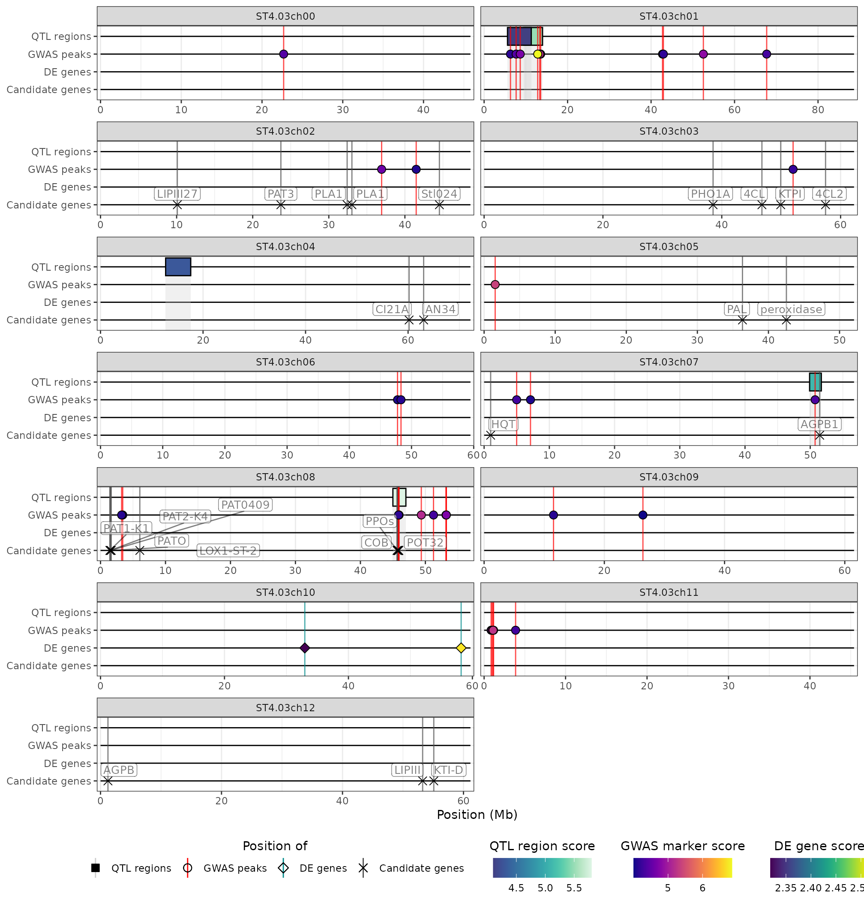

Creating a HIDECAN plot step by step
Source:vignettes/hidecan-step-by-step.Rmd
hidecan-step-by-step.RmdThe hidecan_plot() function is really a wrapper that
performs a series of steps to go from GWAS/DE results and candidate
genes data-frames to a HIDECAN (gg)plot. In this vignette, we present
the different steps performed by the wrapper function. This can be
useful for users who want more control over the process. We’ll work with
the example dataset provided with the package
x <- get_example_data()
str(x)
#> List of 3
#> $ GWAS: tibble [35,481 × 4] (S3: tbl_df/tbl/data.frame)
#> ..$ id : chr [1:35481] "ST4.03ch00_45467783" "ST4.03ch01_88589716" "ST4.03ch02_48614228" "ST4.03ch03_62263578" ...
#> ..$ chromosome: chr [1:35481] "ST4.03ch00" "ST4.03ch01" "ST4.03ch02" "ST4.03ch03" ...
#> ..$ position : num [1:35481] 45467783 88589716 48614228 62263578 72139135 ...
#> ..$ score : num [1:35481] 0.191 1.835 0.381 0.661 0.64 ...
#> $ DE : tibble [10,671 × 7] (S3: tbl_df/tbl/data.frame)
#> ..$ gene : chr [1:10671] "PGSC0003DMG400032056" "PGSC0003DMG400018039" "PGSC0003DMG400020231" "PGSC0003DMG400009197" ...
#> ..$ chromosome : chr [1:10671] "ST4.03ch00" "ST4.03ch01" "ST4.03ch02" "ST4.03ch03" ...
#> ..$ padj : num [1:10671] 0.787 0.63 0.864 0.53 0.975 ...
#> ..$ log2FoldChange: num [1:10671] 0.01143 0.00529 0.00362 0.03197 0.00225 ...
#> ..$ start : num [1:10671] 45813195 88623473 48563271 62256322 72168842 ...
#> ..$ end : num [1:10671] 45813526 88627702 48578978 62258929 72170119 ...
#> ..$ label : chr [1:10671] "Protein transporter" "PhD-finger protein" "Acetyl-CoA synthetase" "Phosphatidylcholine transfer protein" ...
#> $ CAN : tibble [32 × 6] (S3: tbl_df/tbl/data.frame)
#> ..$ id : chr [1:32] "PGSC0003DMG400003155" "PGSC0003DMG400014223" "PGSC0003DMG400011189" "PGSC0003DMG400005492" ...
#> ..$ chromosome: chr [1:32] "ST4.03ch03" "ST4.03ch03" "ST4.03ch07" "ST4.03ch05" ...
#> ..$ start : num [1:32] 46757152 57466692 1001854 36342746 42523943 ...
#> ..$ end : num [1:32] 46762127 57469946 1006278 36347409 42525912 ...
#> ..$ name : chr [1:32] "4CL" "4CL2" "HQT" "PAL" ...
#> ..$ gene_name : chr [1:32] "4-coumarate-CoA ligase" "4-coumarate-CoA ligase 2" "HQT" "phenylalanine ammonia-lyase" ...Formatting input data
Under the hood, the hidecan package relies on S3
classes, which are really just tibbles with specific columns. The
constructors for these S3 classes perform a series of checks and
computations to make sure that all of the required columns (such as
chromosome, score, position) are present in the data.
- GWAS results data-frames are turned into
GWAS_dataobjects through theGWAS_data()constructor:
gwas_data <- GWAS_data(x[["GWAS"]])
class(gwas_data)
#> [1] "GWAS_data" "tbl_df" "tbl" "data.frame"
head(gwas_data)
#> # A tibble: 6 × 4
#> id chromosome position score
#> <chr> <chr> <dbl> <dbl>
#> 1 ST4.03ch00_45467783 ST4.03ch00 45467783 0.191
#> 2 ST4.03ch01_88589716 ST4.03ch01 88589716 1.84
#> 3 ST4.03ch02_48614228 ST4.03ch02 48614228 0.381
#> 4 ST4.03ch03_62263578 ST4.03ch03 62263578 0.661
#> 5 ST4.03ch04_72139135 ST4.03ch04 72139135 0.640
#> 6 ST4.03ch05_52040302 ST4.03ch05 52040302 0.346- DE results data-frames are turned into
DE_dataobjects through theDE_data()constructor:
de_data <- DE_data(x[["DE"]])
class(de_data)
#> [1] "DE_data" "tbl_df" "tbl" "data.frame"
head(de_data)
#> # A tibble: 6 × 9
#> gene chromosome padj log2FoldChange start end label score position
#> <chr> <chr> <dbl> <dbl> <dbl> <dbl> <chr> <dbl> <dbl>
#> 1 PGSC000… ST4.03ch00 0.787 0.0114 4.58e7 4.58e7 Prot… 0.104 4.58e7
#> 2 PGSC000… ST4.03ch01 0.630 0.00529 8.86e7 8.86e7 PhD-… 0.201 8.86e7
#> 3 PGSC000… ST4.03ch02 0.864 0.00362 4.86e7 4.86e7 Acet… 0.0637 4.86e7
#> 4 PGSC000… ST4.03ch03 0.530 0.0320 6.23e7 6.23e7 Phos… 0.276 6.23e7
#> 5 PGSC000… ST4.03ch04 0.975 0.00225 7.22e7 7.22e7 Cons… 0.0109 7.22e7
#> 6 PGSC000… ST4.03ch05 NA -0.000726 5.20e7 5.20e7 Cons… NA 5.20e7- Candidate genes data-frames are turned into
CAN_dataobjects through theCAN_data()constructor:
## CAN_data constructor
can_data <- CAN_data(x[["CAN"]])
class(can_data)
#> [1] "CAN_data" "tbl_df" "tbl" "data.frame"
head(can_data)
#> # A tibble: 6 × 7
#> id chromosome start end name gene_name position
#> <chr> <chr> <dbl> <dbl> <chr> <chr> <dbl>
#> 1 PGSC0003DMG400003155 ST4.03ch03 46757152 46762127 4CL 4-coumar… 4.68e7
#> 2 PGSC0003DMG400014223 ST4.03ch03 57466692 57469946 4CL2 4-coumar… 5.75e7
#> 3 PGSC0003DMG400011189 ST4.03ch07 1001854 1006278 HQT HQT 1.00e6
#> 4 PGSC0003DMG400005492 ST4.03ch05 36342746 36347409 PAL phenylal… 3.63e7
#> 5 PGSC0003DMG400005279 ST4.03ch05 42523943 42525912 peroxida… peroxida… 4.25e7
#> 6 PGSC0003DMG400007782 ST4.03ch03 38537202 38540209 PHO1A PHO1A 3.85e7These constructors will throw an error if a required column is missing from the input data (e.g. no chromosome column):
gwas_wrong_input <- x[["GWAS"]] |>
select(-chromosome)
GWAS_data(gwas_wrong_input)
#> Error: Input data-frame is missing the following columns: 'chromosome'.They will also compute marker or gene scores from adjusted p-values
if necessary (see the Input data
section of the hidecan vignette). For example, for DE results, if we
provide a padj column (with the adjusted p-values of the
genes) rather than a score column, the constructor will
compute the score column based on the padj
column. You can also notice that a position column is
computed based on the start and end of the genes:
## Input tibble
head(x[["DE"]])
#> # A tibble: 6 × 7
#> gene chromosome padj log2FoldChange start end label
#> <chr> <chr> <dbl> <dbl> <dbl> <dbl> <chr>
#> 1 PGSC0003DMG400032056 ST4.03ch00 0.787 0.0114 45813195 45813526 Prote…
#> 2 PGSC0003DMG400018039 ST4.03ch01 0.630 0.00529 88623473 88627702 PhD-f…
#> 3 PGSC0003DMG400020231 ST4.03ch02 0.864 0.00362 48563271 48578978 Acety…
#> 4 PGSC0003DMG400009197 ST4.03ch03 0.530 0.0320 62256322 62258929 Phosp…
#> 5 PGSC0003DMG403025662 ST4.03ch04 0.975 0.00225 72168842 72170119 Conse…
#> 6 PGSC0003DMG400023316 ST4.03ch05 NA -0.000726 52039916 52040326 Conse…
## Output of the DE_data constructor
head(de_data)
#> # A tibble: 6 × 9
#> gene chromosome padj log2FoldChange start end label score position
#> <chr> <chr> <dbl> <dbl> <dbl> <dbl> <chr> <dbl> <dbl>
#> 1 PGSC000… ST4.03ch00 0.787 0.0114 4.58e7 4.58e7 Prot… 0.104 4.58e7
#> 2 PGSC000… ST4.03ch01 0.630 0.00529 8.86e7 8.86e7 PhD-… 0.201 8.86e7
#> 3 PGSC000… ST4.03ch02 0.864 0.00362 4.86e7 4.86e7 Acet… 0.0637 4.86e7
#> 4 PGSC000… ST4.03ch03 0.530 0.0320 6.23e7 6.23e7 Phos… 0.276 6.23e7
#> 5 PGSC000… ST4.03ch04 0.975 0.00225 7.22e7 7.22e7 Cons… 0.0109 7.22e7
#> 6 PGSC000… ST4.03ch05 NA -0.000726 5.20e7 5.20e7 Cons… NA 5.20e7Computing chromosome length
Once the input datasets have been formatted appropriately, they are
used to compute the length of the chromosomes present in the data. This
is done through the combine_chrom_length() function, which
is applied to a list of GWAS_data, DE_data or
CAN_data objects:
chrom_length <- combine_chrom_length(list(gwas_data,
de_data,
can_data))
chrom_length
#> # A tibble: 13 × 2
#> chromosome length
#> <chr> <dbl>
#> 1 ST4.03ch00 45813526
#> 2 ST4.03ch01 88627702
#> 3 ST4.03ch02 48614228
#> 4 ST4.03ch03 62263578
#> 5 ST4.03ch04 72170119
#> 6 ST4.03ch05 52040326
#> 7 ST4.03ch06 59476545
#> 8 ST4.03ch07 56715111
#> 9 ST4.03ch08 56937627
#> 10 ST4.03ch09 61539681
#> 11 ST4.03ch10 59687482
#> 12 ST4.03ch11 45409456
#> 13 ST4.03ch12 61152223The function works by calling for each element in the list the
compute_chrom_length() function. The function, according to
whether the input is a tibble of markers (GWAS_data) or
genes (DE_data or CAN_data), looks for the
maximum value in either the position column (for markers)
or the end column (for genes).
head(compute_chrom_length(gwas_data), 3)
#> # A tibble: 3 × 2
#> chromosome length
#> <chr> <dbl>
#> 1 ST4.03ch00 45467783
#> 2 ST4.03ch01 88589716
#> 3 ST4.03ch02 48614228
head(compute_chrom_length(de_data), 3)
#> # A tibble: 3 × 2
#> chromosome length
#> <chr> <dbl>
#> 1 ST4.03ch00 45813526
#> 2 ST4.03ch01 88627702
#> 3 ST4.03ch02 48578978Applying threshold
Next, the GWAS and DE results tibbles are filtered according to a
threshold, in order to retain the significant markers or genes. This is
done through the apply_threshold() function. This function
has two (rather self-explanatory) arguments: score_thr and
log2fc_thr.
When applied to a GWAS_data object, the function filters
markers with a score above the value set with score_thr
argument (the log2fc_thr argument is ignored), and returns
an object of class GWAS_data_thr:
dim(gwas_data)
#> [1] 35481 4
gwas_data_thr <- apply_threshold(gwas_data,
score_thr = 4)
class(gwas_data_thr)
#> [1] "GWAS_data_thr" "tbl_df" "tbl" "data.frame"
dim(gwas_data_thr)
#> [1] 37 4
head(gwas_data_thr)
#> # A tibble: 6 × 4
#> id chromosome position score
#> <chr> <chr> <dbl> <dbl>
#> 1 ST4.03ch00_22680252 ST4.03ch00 22680252 4.41
#> 2 ST4.03ch01_6317643 ST4.03ch01 6317643 4.15
#> 3 ST4.03ch01_7671100 ST4.03ch01 7671100 4.43
#> 4 ST4.03ch01_8653747 ST4.03ch01 8653747 4.69
#> 5 ST4.03ch01_12842648 ST4.03ch01 12842648 6.85
#> 6 ST4.03ch01_13334335 ST4.03ch01 13334335 5.24For a DE_data object, the apply_threshold function
filters genes based on both their score and log2(fold-change), and
returns an object of class DE_data_thr:
dim(de_data)
#> [1] 10671 9
de_data_thr <- apply_threshold(de_data,
score_thr = 2,
log2fc_thr = 0.5)
class(de_data_thr)
#> [1] "DE_data_thr" "tbl_df" "tbl" "data.frame"
dim(de_data_thr)
#> [1] 2 9
head(de_data_thr)
#> # A tibble: 2 × 9
#> gene chromosome padj log2FoldChange start end label score position
#> <chr> <chr> <dbl> <dbl> <dbl> <dbl> <chr> <dbl> <dbl>
#> 1 PGSC0003… ST4.03ch10 0.00480 0.757 3.30e7 3.30e7 Cons… 2.32 3.30e7
#> 2 PGSC0003… ST4.03ch10 0.00305 0.691 5.82e7 5.82e7 N-ac… 2.52 5.82e7Finally, if applied to a CAN_data object, the
apply_threshold() function simply returns the input tibble
as an object of class CAN_data_thr:
dim(can_data)
#> [1] 32 7
can_data_thr <- apply_threshold(can_data,
score_thr = 2,
log2fc_thr = 0.5)
class(can_data_thr)
#> [1] "CAN_data_thr" "tbl_df" "tbl" "data.frame"
dim(can_data_thr)
#> [1] 32 7
head(can_data_thr)
#> # A tibble: 6 × 7
#> id chromosome start end name gene_name position
#> <chr> <chr> <dbl> <dbl> <chr> <chr> <dbl>
#> 1 PGSC0003DMG400003155 ST4.03ch03 46757152 46762127 4CL 4-coumar… 4.68e7
#> 2 PGSC0003DMG400014223 ST4.03ch03 57466692 57469946 4CL2 4-coumar… 5.75e7
#> 3 PGSC0003DMG400011189 ST4.03ch07 1001854 1006278 HQT HQT 1.00e6
#> 4 PGSC0003DMG400005492 ST4.03ch05 36342746 36347409 PAL phenylal… 3.63e7
#> 5 PGSC0003DMG400005279 ST4.03ch05 42523943 42525912 peroxida… peroxida… 4.25e7
#> 6 PGSC0003DMG400007782 ST4.03ch03 38537202 38540209 PHO1A PHO1A 3.85e7As for the GWAS_data, DE_data or
CAN_data objects, the GWAS_data_thr,
DE_data_thr and CAN_data_thr objects are
really just tibbles.
Creating the HIDECAN plot
Finally, the filtered datasets are combined into a list and passed on
to the create_hidecan_plot() function, along with the
tibble of chromosome length. This is the function that generates the
HIDECAN ggplot:
create_hidecan_plot(
list(gwas_data_thr,
de_data_thr,
can_data_thr),
chrom_length
)
This function shares most of its arguments with the
hidecan_plot() wrapper for controlling different aspects of
the plot.